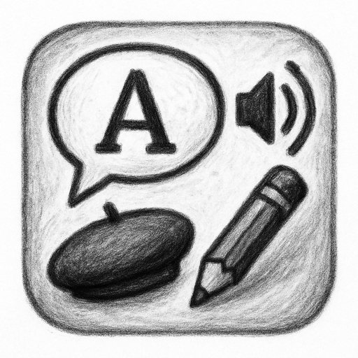

How to play
- Start a round from the game menu.
- Listen to the spoken French prompt.
- Choose the matching written option.
- Keep going to improve listening and recall speed.
Game mode
Listen to French vocabulary and match it to the correct written answer.
